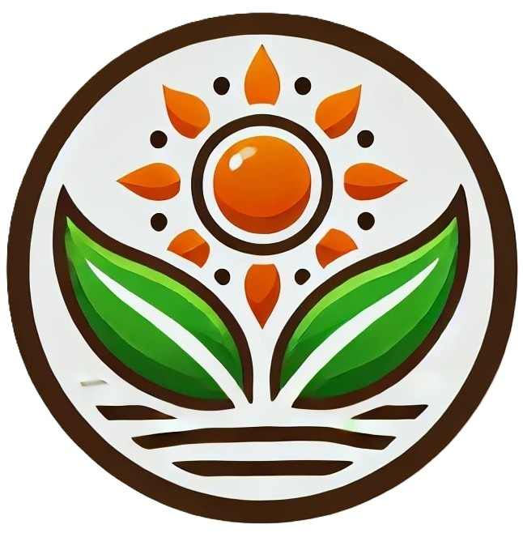

Eleve seu negócio digital a outro nível com um Front-End de qualidade!
Olá! Sou Vinicius Marques, desenvolvedor Jr Front-end cursando JavaScript, HTML e CSS na ALURA. Ajudo pequenos negócios e designers a colocarem em prática boas ideias. Vamos conversar?
Sobre Mim
Com 5 anos de experiência na área de produção, desenvolvi habilidades sólidas em planejamento, organização e execução de projetos com foco em resultados concretos e de alta qualidade. Minha trajetória profissional foi marcada pela busca constante por eficiência e qualidade, características que agora trago para um novo desafio: a transição para a área de tecnologia, onde pretendo aplicar esses aprendizados de forma inovadora e estratégica.
Atualmente, estou cursando Programação com foco em Front-End, onde estou aprendendo a criar interfaces funcionais e visualmente atraentes, alinhadas às necessidades do usuário, às melhores práticas do mercado e às exigências do setor de tecnologia. Essa mudança reflete minha paixão pelo aprendizado contínuo e meu interesse pela inovação e desenvolvimento tecnológico, fatores que considero essenciais para essa nova fase da minha carreira.
Meu objetivo é combinar minha experiência prática com as novas habilidades adquiridas, contribuindo para projetos que unam funcionalidade, criatividade e eficiência, oferecendo soluções eficazes e centradas no usuário. Estou animado para construir uma nova jornada profissional, trazendo uma visão diversificada e determinação para superar desafios, enquanto agregamos valor às equipes e projetos dos quais faço parte, sempre com o compromisso de alcançar resultados de excelência.
Um pouco sobre os meus Projetos até agora
Desenvolvi alguns projetos front-end utilizando HTML, CSS e JavaScript, onde pude explorar minha criatividade e aprender na prática.
Entre os projetos, criei um site temático de floricultura inspirado em girassóis, um portfólio pessoal interativo e responsivo, além de uma aplicação web dinâmica para cálculos simples.
Esses trabalhos me ajudaram a melhorar minhas habilidades em desenvolvimento de interfaces funcionais e atrativas, sempre buscando alinhar design e usabilidade.
-
Projeto Jogo Do Número Secreto
Um jogo interativo que desafia o usuário a adivinhar um número gerado aleatoriamente, aplicando lógica e manipulação do DOM.

-
Projeto Essência Consultoria
Um site institucional com foco em layout limpo e responsivo, projetado para destacar serviços de consultoria.
-
Projeto Girassol Consultoria
Um projeto temático inspirado em girassóis, com design acolhedor e funcional para representar uma empresa de consultoria.
-
Projeto Quiz Do Corinthians
Um quiz divertido e interativo para testar conhecimentos sobre o Corinthians, utilizando JavaScript para lógica e validação.

-
Projeto Alura Plus
Um projeto de página web funcional e responsiva, desenvolvido com base em boas práticas de design e usabilidade.

-
Projeto Alura Books
Uma interface moderna para apresentação de livros, com foco em organização e responsividade.

-
Projeto Optimus Tech
Um site com design profissional voltado para tecnologia, mostrando um olhar estratégico para aplicações visuais e práticas.

.png) E-mail
E-mail.png) Instagram
Instagram
.png) LinkedIn
LinkedIn